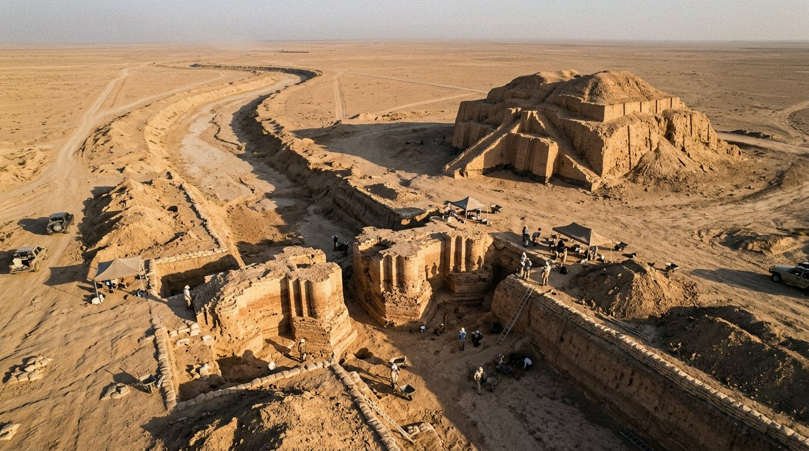
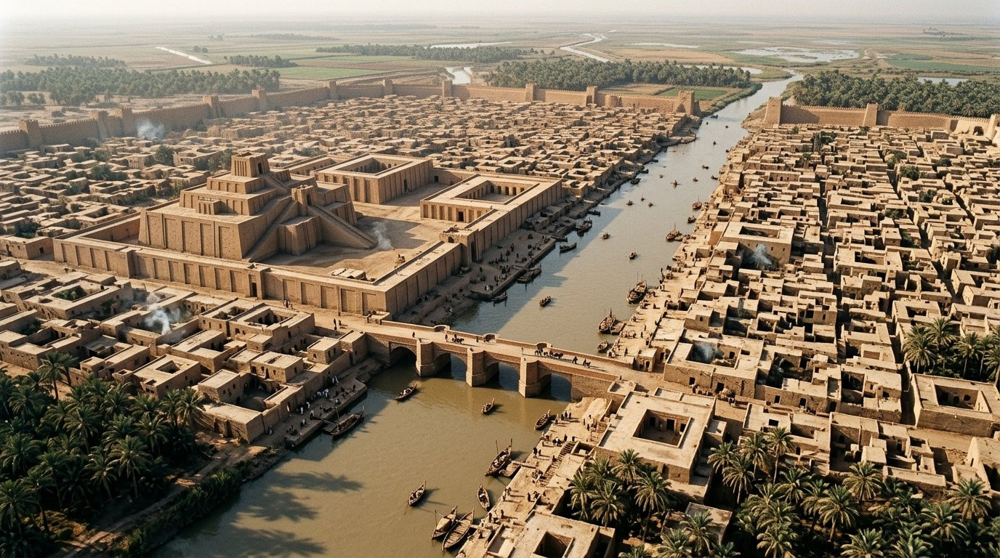
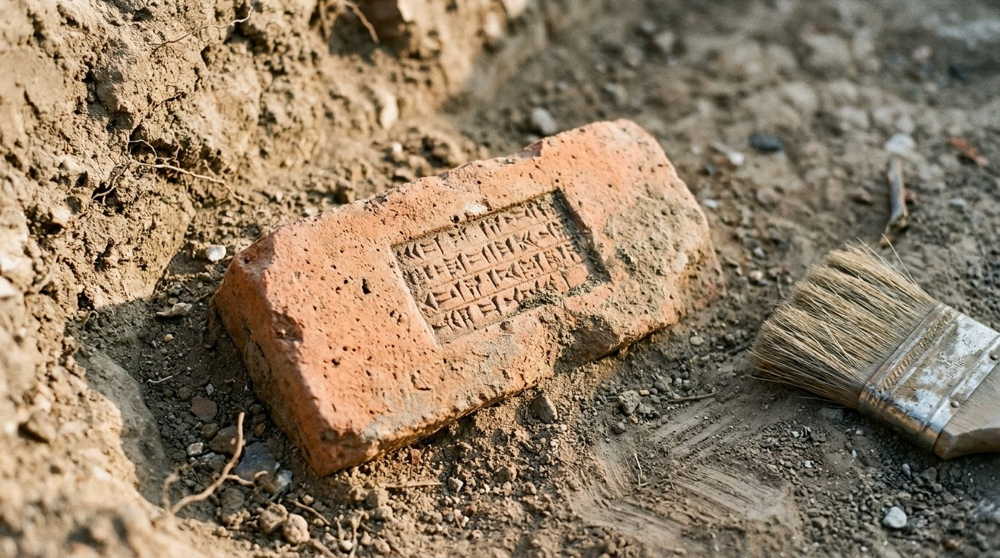

El Puente de Larsa: la Obra de 3.800 Años que Firmó un Rey de Mesopotamia
Cuando imaginamos Mesopotamia pensamos en zigurats de adobe recortados contra el desierto y en tablillas de arcilla apiladas en los archivos de los palacios. Pero las grandes ciudades del sur de Irak no eran ciudades del desierto: eran ciudades del agua. Vivían de los canales que derivaban el Tigris y el Éufrates hacia los campos, y por esos mismos canales circulaban el grano, la madera, la lana y los viajeros. En noviembre de 2026, el Consejo Estatal de Antigüedades y Patrimonio de Irak y la misión arqueológica francesa dirigida por Régis Vallet presentaron los avances en la excavación de una obra que lo demuestra mejor que cualquier texto: un puente monumental de hace unos 3.800 años en la antigua Larsa, el actual Tell es-Senkereh, en la provincia de Dhi Qar.
Una ciudad atravesada por canales
A comienzos del II milenio a.C., Larsa fue una de las potencias del sur mesopotámico, rival de Isin y de Babilonia por el control de las rutas del agua. Según el equipo excavador, la ciudad ocupaba unas 200 hectáreas rodeadas por una muralla de varios kilómetros y estaba surcada por una red de canales que conectaba campos, muelles y barrios. Su arteria principal, conocida hoy como el Gran Canal, tenía unos 22 metros de anchura y cruzaba el centro urbano muy cerca del zigurat y del Ebabbar, el templo del dios solar Shamash, patrón de la ciudad.
Un canal de esas dimensiones era a la vez una bendición y un obstáculo. Llevaba el agua y las mercancías hasta el corazón de la ciudad, pero partía en dos los barrios, los templos y los mercados. La solución de los ingenieros de Larsa fue la estructura que los arqueólogos han catalogado como B69: un puente sobre pilares de ladrillo cocido, el material más caro y resistente de la construcción mesopotámica, reservado a las obras que debían soportar el agua.

Pilares que resistieron siglos de crecidas
El adobe secado al sol se deshace con la humedad; el ladrillo cocido en horno, unido con betún o con mortero, aguanta. Por eso los mesopotámicos lo usaban en los muelles, en los desagües y en las bases de los muros expuestos a las crecidas. Los pilares del puente de Larsa muestran además varias fases de construcción y de reparación: hiladas añadidas, refuerzos y remodelaciones que indican que el puente se mantuvo en uso durante generaciones y que la ciudad invirtió en conservarlo.
Los arqueólogos han despejado ya cerca de la mitad de la estructura. Su posición, junto al zigurat, sugiere que no era un simple paso de barrio, sino una pieza de la circulación ceremonial y administrativa de la ciudad: el camino que unía las dos mitades del centro religioso sin interrumpir el tráfico de barcazas que pasaba por debajo.
La firma de un rey constructor
La pieza que permitió fechar el puente apareció en la parte superior del pilar oriental: un ladrillo cocido con una inscripción real a nombre de Sin-iddinam, rey de Larsa entre 1849 y 1843 a.C. Hijo de Nur-Adad, Sin-iddinam reinó apenas seis años, pero sus inscripciones lo presentan como un gran organizador del agua: en uno de sus textos más conocidos se jacta de haber excavado y restaurado el cauce del Tigris para asegurar el riego y la navegación de su reino.
Firmar un ladrillo no era un gesto decorativo. En Mesopotamia, los reyes hacían estampar o grabar su nombre en los ladrillos de las obras que patrocinaban como prueba ante los dioses y ante la posteridad de que habían cumplido su deber de constructores. Encontrar ese nombre en un puente confirma que, para un rey de Larsa, una obra hidráulica merecía la misma gloria que un templo o una victoria militar.

Por qué importa
Los puentes de la Mesopotamia antigua son muy escasos en el registro arqueológico. Conocíamos sobre todo el gran puente de Babilonia, descrito por Heródoto y excavado a comienzos del siglo XX, mil años posterior al de Larsa. El hallazgo adelanta la ingeniería de puentes urbanos casi un milenio y la sitúa en una ciudad paleobabilónica, en tiempos en que Larsa todavía disputaba la hegemonía a Babilonia. Pocas décadas después, en 1763 a.C., Hammurabi conquistaría la ciudad.
La misión prevé completar la excavación del puente en las próximas campañas, estudiar los morteros y el método constructivo de los pilares y buscar nuevas inscripciones. Cada hilada que sale a la luz recuerda que el esplendor de Mesopotamia se sostuvo tanto sobre sus ejércitos como sobre sus ingenieros.
"Para un rey de Larsa, una obra hidráulica merecía la misma gloria que un templo o una victoria."
— HISTORIKA · Hallazgos II
Fuentes y referencias
- Arkeonews (11/2026)
- GreekReporter (13/11/2026)
- Shafaq News
- Consejo Estatal de Antigüedades y Patrimonio de Irak
Lee la revista
Hojea gratis Hallazgos II →